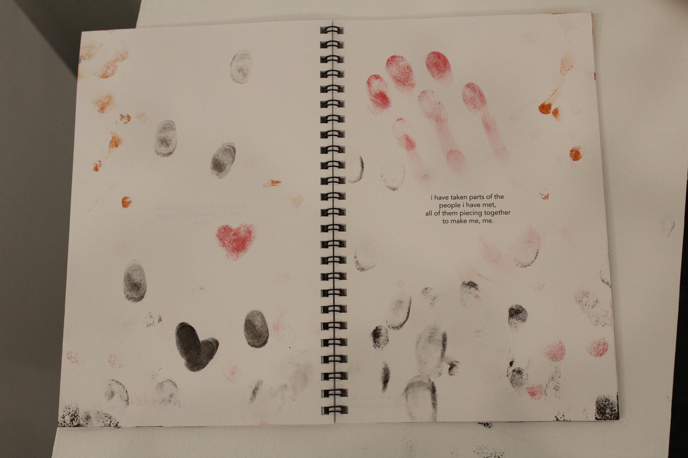
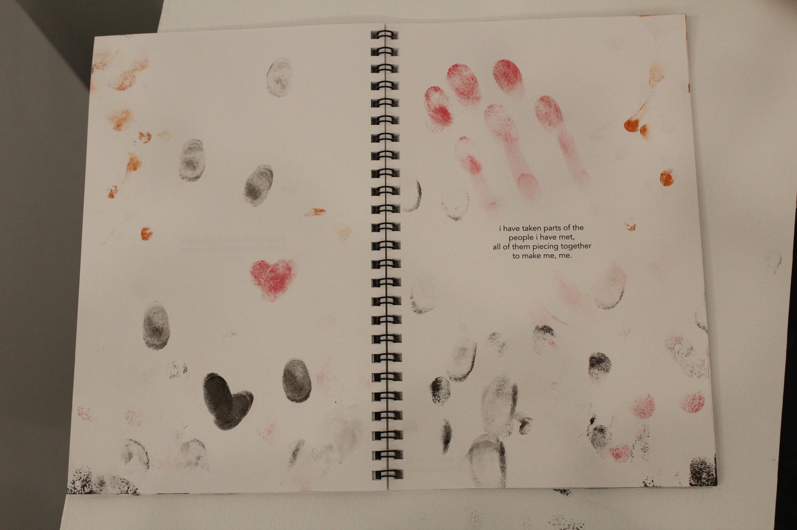
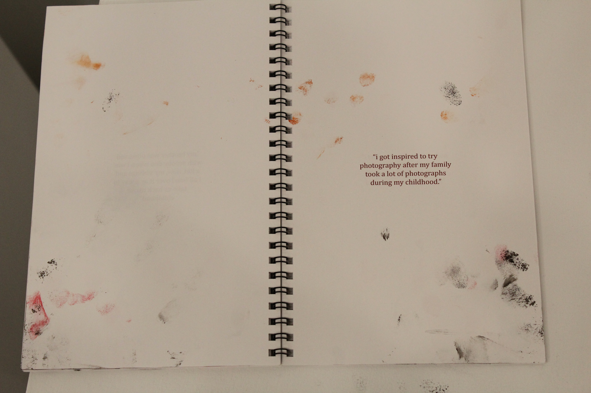
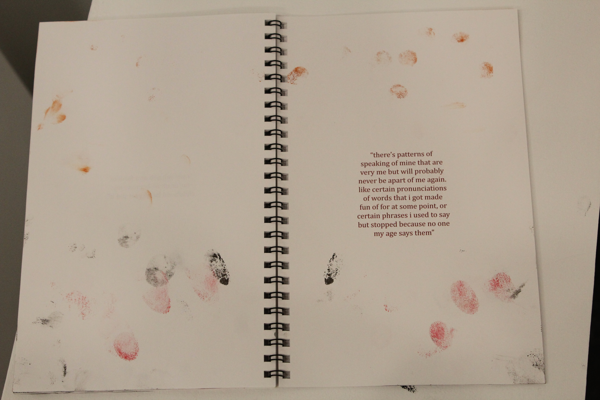
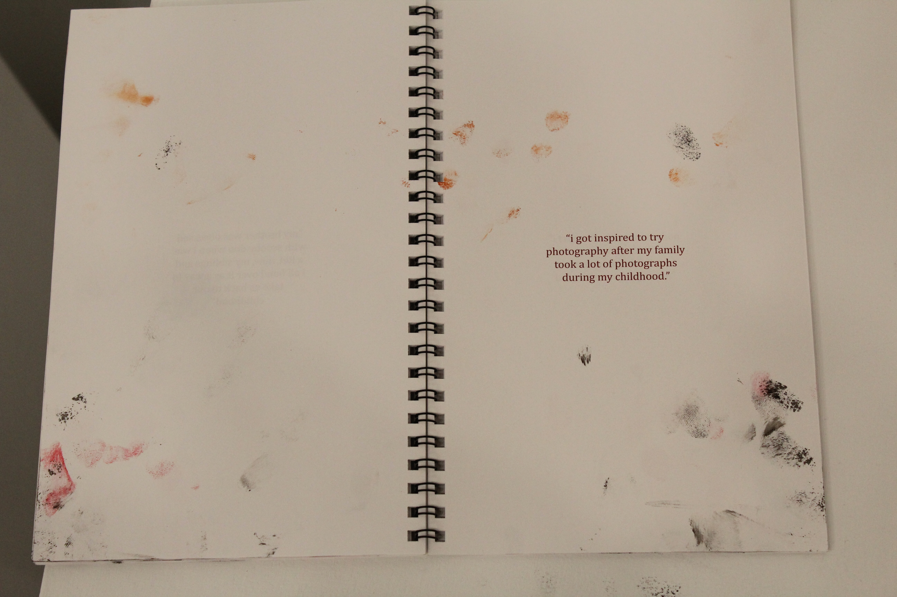
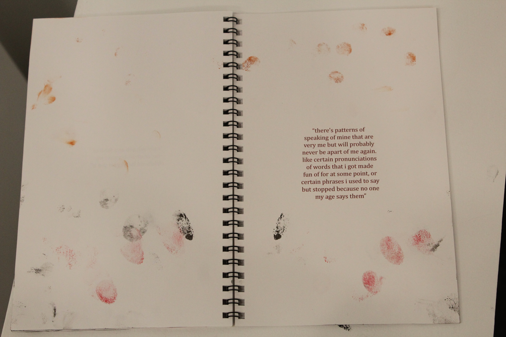

Scales of Indifference
Fall 2024
Exhibition
The Anderson, Richmond, VA
September 20-October 11, 2024
Scales of Indifference initially began as an opportunity to showcase an underrepresented art discipline in a fine arts space. Curators and Graphic Design students, Jenna Casey and Zach Montgomery set out with this in mind, working tirelessly to materialize this vision. Similar to the show’s objective of broadening preconceived notions of time, the variety of media displayed in this space also works to advance perspectives of Graphic Design as an interdisciplinary and unrestricted practice.


 


 


